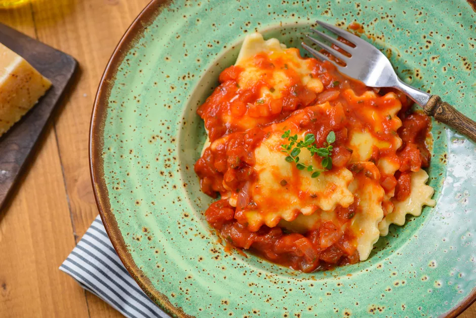

Ravioli

Ravioli with marinara sauce, garnished with fresh oregano
Ravioli is a timeless classic that will satisfy even the pickiest of palates. This recipe
is simple and easy to make and will be a favorite you'll want to make time and time again.
Ingredients
- 2 large eggs
- 1 cup ricotta
- 1 cup grated mozzarella
- 1/4 cup finely grated Parmesan cheese
- 2 tablespoons fresh thyme
- 1/2 teaspoon plus 1 tablespoon kosher salt, divided
- 2 to 4 tablespoons all-purpose flour, for dusting
- 1 recipe for
homemade pasta dough